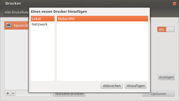
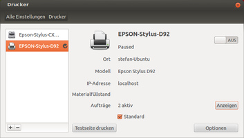
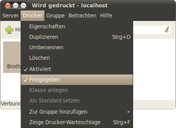

GNOME Druckerkonfiguration
Dieser Artikel wurde für die folgenden Ubuntu-Versionen getestet:
Ubuntu 17.10 Artful Aardvark
Ubuntu 16.04 Xenial Xerus
Ubuntu 14.04 Trusty Tahr
Zum Verständnis dieses Artikels sind folgende Seiten hilfreich:
Zum Drucken nutzen alle Desktop-Umgebungen das "Common Unix Printing System", kurz CUPS. Dadurch stehen Drucker allen Anwendungen zur Verfügung. Zur Konfiguration stehen mehrere Programme zur Verfügung, mit denen Drucker eingerichtet, verwaltet und sogar im Netzwerk anderen Computern zur Verfügung gestellt werden können, ohne sich mit Serverdiensten beschäftigen zu müssen.
Sofern der CUPS-Druckdienst und die Treiber auf dem Rechner installiert und eingerichtet sind – was bei Ubuntu normalerweise direkt nach der Installation der Fall ist – so ist es an der Zeit, den oder die Drucker selbst in Betrieb zu nehmen.
Historisch bedingt ist dieser Artikel zweigeteilt: Unity und GNOME 3 nutzen eine überarbeitete Fassung, während Lubuntu, Ubuntu MATE und Xubuntu weiterhin den alten Druckdialog von GNOME 2 einsetzen. Andere Desktop-Umgebungen werden im Übersichtsartikel Drucker behandelt.
Unity/GNOME 3¶
Neue Druckerkonfiguration¶
Bei der Ubuntu-Standard-Installation wird ein Konfigurationsprogramm mit installiert, das in den Systemeinstellungen unter "Systemeinstellungen -> Drucker" zu finden ist. Neue Drucker lassen sich durch einen Klick auf die Schaltfläche  hinzufügen. Das Programm sucht jetzt automatisch nach angeschlossenen Druckern. Wenn ein Drucker gefunden wurde, kann man ihn durch einen Klick auf die Schaltfläche "Hinzufügen" installieren. Danach kann man mit einem Klick auf die Schaltfläche "Testseite drucken" testen, ob der Drucker ordnungsgemäß funktioniert.
hinzufügen. Das Programm sucht jetzt automatisch nach angeschlossenen Druckern. Wenn ein Drucker gefunden wurde, kann man ihn durch einen Klick auf die Schaltfläche "Hinzufügen" installieren. Danach kann man mit einem Klick auf die Schaltfläche "Testseite drucken" testen, ob der Drucker ordnungsgemäß funktioniert.
|  |
| Unity/GNOME3 - Drucker hinzufügen |
|  |
| Unity/GNOME3 - Druckereinstellung |
Druckereigenschaften bearbeiten¶
Durch einen Klick auf die Schaltfläche "Optionen" kann man festlegen, welche Benutzer diesen Drucker benutzen dürfen. Um einen Drucker als Standarddrucker festzulegen, muss man einfach die Option "Standard" aktivieren.
Drucker im Netzwerk¶
Wenn ein Drucker an einem anderen Linux-Computer betrieben wird und im Netzwerk freigegeben ist, wird dieser automatisch angezeigt. Möchte man einen Netzwerkdrucker hinzufügen, der an einem Windows-Computer oder direkt an das Netzwerk angeschlossen ist, dann klickt man wieder auf die Schaltfläche und wählt den Reiter "Netzwerk" aus. Das Programm sucht nun automatisch nach Netzwerkdruckern. Alternativ kann man auch eine IP-Adresse angeben, um die Suche zu beschleunigen.
Druckeraufträge verwalten¶
Man gelangt mit einem Klick auf die Schaltfläche "Anzeigen" zu den aktuellen Druckaufträgen, die man entweder anhalten, löschen oder fortsetzen kann.
Drucker löschen¶
Mit einem Klick auf die Schaltfläche kann man den ausgewählten Drucker löschen.
Achtung!
Es erscheint keine erneute Nachfrage! Der Drucker wird sofort gelöscht!
Weitere Einstellungen¶
Weitere Einstellungen kann man mit diesem Programm leider nicht treffen, dazu muss man den alten Druckereinrichtungsdialog benutzen.
LXDE/MATE/Xfce¶
Alte Druckerkonfiguration¶
Das früher als Standard verwendete Programm system-config-printer  wird über den gleichnamigen Befehl gestartet:
wird über den gleichnamigen Befehl gestartet:
system-config-printer
Drucker installieren¶
Neue Drucker lassen sich durch einen Klick auf die Schaltfläche "Neu" bzw. "Hinzufügen" eintragen.
Manche Hersteller bieten PPD-Dateien zu ihren Druckern an. Diese Dateien kann man als Druckertreiber bezeichnen. Beim Hinzufügen eines Druckers kann man über "Treiber installieren" solch eine Datei als Treiber zum System hinzufügen. Diese Aktion ist nur Mitgliedern der Gruppe lpadmin gestattet. Dies ist automatisch der erste bei der Installation angelegte Benutzer. Weiteren Benutzern muss dieses Recht erst gegeben werden [3].
Druckereigenschaften bearbeiten¶
Im Menü "Drucker -> Eigenschaften" lassen sich die Eigenschaften des Druckers ändern. Möchte man einen Drucker mit unterschiedlichen Profilen (z.B. Auflösungen, Farbtiefen usw.) betreiben, bietet es sich an, den Drucker unter CUPS mehrmals zu installieren und dann über die Eigenschaften unterschiedliche Einstellungen vorzunehmen.
Drucker aktivieren¶
Im Menü "Drucker -> Eigenschaften" muss ein Häkchen vor "Aktiviert" gesetzt sein, sonst druckt der Drucker trotz vorhandenem Druckauftrag nicht.
Standarddrucker¶
Man wählt den gewünschten Drucker mit der rechten Maustaste  aus und klickt im Kontextmenü auf den Punkt "Als Standard setzen".
aus und klickt im Kontextmenü auf den Punkt "Als Standard setzen".
Netzwerkdrucker¶
|  |
| Netzwerkdrucker |
CUPS ist mehr als nur ein einfacher Weg, um Drucker zu installieren und zu nutzen. CUPS ist ein Drucksystem, bestehend aus einem Server und einem Client. Dadurch ist es möglich, Drucker im Netzwerk freizugeben und über anderen Rechner diesen Drucker zu nutzen.
Drucker im Netzwerk automatisch einbinden¶
Wenn im Netzwerk ein Linux-Rechner mit CUPS als Drucker-Server dient, kann man diesen per "Server -> Verbinden" verbinden lassen.
Lokale Drucker im Netzwerk freigeben¶
Sollen die lokal installierten Drucker über das Netzwerk anderen Rechnern zur Verfügung gestellt werden, so kann man die Option "Server -> Einstellungen -> Freigabe aller Drucker, die mit diesem System verbunden sind." aktivieren. Von nun an können andere Rechner über den Druckserver auf den freigegebenen Drucker drucken.
Netzwerkfähige Drucker einbinden¶
Hinweis:
Viele Netzwerkdrucker werden automatisch erkannt.
Manche Drucker werden heutzutage mit Netzwerkanschluss oder WLAN-Funktion angeboten. So ist es möglich, diese ohne Printserver im Netzwerk zu nutzen. Um einen solchen Drucker einzurichten, geht man wie folgt vor:
Auf die Schaltfläche "Neu" klicken, um einen neuen Drucker einzurichten
Im Fenster "Neuer Drucker" wählt man unter "Verbindung auswählen -> Sonstiges"
Im Feld "Geräte-URI eingeben" wird die Druckeradresse wie folgt eingegeben:
socket://DRUCKER-IP:DRUCKER-PORT. Beispiel:socket://192.168.2.100:9100Um die IP-Adresse des Druckers herauszufinden, gibt es mehrere Wege:
Gegebenenfalls steht die Standardadresse im Handbuch
Der Drucker bietet über sein Bedienfeld die Möglichkeit, diese einzugeben oder abzurufen
Man kann einen Netzwerkscanner einsetzen, um diese in Erfahrung zu bringen (siehe Netzwerk-Monitoring)
Der Port sollte in den meisten Fällen 9100 sein. Sonst hilft hier ebenfalls ein Netzwerkscanner.
Anschließend kann man den Druckertreiber oder eine PPD-Datei auswählen bzw. danach suchen
Abschließend noch den "Drucker-Namen" und bei Bedarf eine "Beschreibung" sowie einen "Standort" eingeben
Unter der Voraussetzung, dass der korrekte Treiber installiert wurde, kann man den Drucker jetzt über das Netzwerk nutzen.
Problembehebung¶
GNOME Shell¶
Wenn man die GNOME Shell benutzt, dann kann es vorkommen, dass man bei der Installation eines Netzwerkdruckers über den neuen Druckerdialog folgende Fehlermeldung erhält:
"FirewallD wird nicht ausgeführt. Für die Erkennung von Netzwerkdruckern müssen die Dienste mdns, ipp, ipp-client und samba-client in der Firewall freigegeben sein."
In diesem Fall benutzt man den alten Druckereinrichtungsdialog bzw. den Befehl system-config-printer.
LPT-USB-Adapter¶
Ältere Parallelport-Drucker, die über einen LPT-USB-Adapter angebunden werden, werden evtl. nicht automatisch erkannt, sondern müssen manuell eingetragen werden. Meist funktionieren diese Adapter unter Ubuntu auch gar nicht.
 - Übersichtsartikel
- Übersichtsartikel- Erstellt mit Inyoka
-
 2004 – 2017 ubuntuusers.de • Einige Rechte vorbehalten
2004 – 2017 ubuntuusers.de • Einige Rechte vorbehalten
Lizenz • Kontakt • Datenschutz • Impressum • Serverstatus -
Serverhousing gespendet von